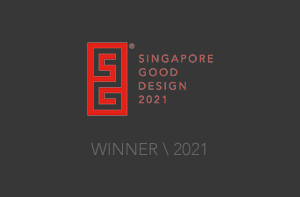

SYSTEMZERO5 ;
mark lawrence ongHaving traveled through the creative industry in Australia, Canada, Singapore and Thailand for over 25 years, Mark has done multidisciplinary and award-winning creative work for international clients such as Google, Amazon, YouTube, Netflix, Unilever, Ubisoft, and many others.

Strong belief in being part of leadership focused on continuous learning, through strategy, planning, client management, concept, writing, storyboard, art + design, sound, animation, etc - but equally important is imparting soft + hard skills to coach the next creative leaders.
Creative work exposure in multiple regions/markets:
His innate love for animation and interactive design traverses across his creative expressions. He loves experiencing and hearing good stories, just as much as making them.
Always absorbing the wonders of everyday life, and give back as much as possible. And needs a permanent drum kit setup (unlikely).
A little space bursting with probably too many ideas. 6Station Studio is an experimental base for producing interactive things in the physical and digital world. Stay tuned.
Arcs of Stellar is an experimental music outlet focused on loops of emotive noise + ambient songs that tell seemingly fleeting/floating stories.
- 


- © systemzero5